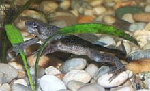

African Dwarf Frog
African Dwarf Frogs are native to the continent of Africa, near the equator and mainly in forests. These frogs spend their lives underwater, but must frequently come to the surface for air, since they have lungs instead of gills! Their skin is usually a brownish green, sometimes with black spots, and they prefer to stay near the bottom of the bodies of water they inhabit, where their colors help them blend in. They are also popular as pets, since they do not require very much care to thrive.